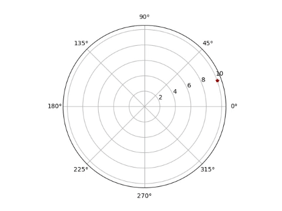

It might seem that galaxies would naturally spiral as they spin, just as water spirals down a drain. But galaxy shapes are much more complex, and scientists have long puzzled over why spiral arms exist. They initially looked at the billions of stars and matter that make up a galaxy as one singular object. This confused them because what they saw in the sky did not match what they expected. They needed to look at the different bits of matter in the galaxies separately and as parts of a whole. Currently, there are two leading theories on why galaxies have spiral arms, outlined below.
Galaxies have many shapes, but 75% of galaxies in the entire known universe have spiral arms. We needed a theory because if the matter gathered around a galaxy as we would predict based on gravity and other laws of physics, then each galaxy should eventually become a flattened disk where matter and light are distributed evenly. This is what happens in elliptical galaxies, but that doesn't happen in spiral galaxies. When we look at spiral galaxies, we automatically assume that the arms are long tendrils; of related matter, all connected around the galaxy center. However, laws of physics quickly prove this incorrect. If this were true, in order for these arms to maintain their shape over time, then the ends of the arms would have to move faster than the parts near the center of the galaxy. This is because the ends of the arms have more distance to travel and feel less gravitational pull from the galaxy's center. This is why Earth's orbit takes 365 days, but Neptune's orbit is 165 Earth years. This fact directly contradicts spiral arms being long tendrils of attached matter. If they were, they would wind up until we would no longer see a spiral arm structure. So, maybe galaxies are becoming less spiral? Even though we can't wait millions of years for the galaxies to unwind, we know this explanation is not the whole story. We can see spiral arm galaxies old enough that they would have already lost their spiral shape if their arms are always winding.
Density Wave Theory says that spiral arms are denser regions of the galaxy and shine brighter than surrounding areas. This is different from the belief above because it states that the galaxy's matter moves separately and slows as it moves through the less dense space. This would explain why matter on the outskirts of the galaxy takes longer to rotate than matter closer to the galaxy's center. The matter doesn't have to rotate at the same speed or take the same amount of time to complete one orbit. However, scientists don't know what would cause these density waves. They have been connected to bars in galaxies, but these are not in all spiral galaxies. This theory would also not work well to explain other galaxies' shapes.
 Another theory is Stochastic Self-Propagating Star Formation, called SSPSF for short. Now, that is a long and confusing acronym, but the fundamental theory is easy to understand. Let's first break down the acronym. “Stochastic” means randomly, and “propagating” means creation. So, in layman's terms, the acronym means random, self-creating star formation. This theory states that existing stars give off waves of energy creating other stars nearby. Many of these energy waves include explosions like supernovae, solar wind, and gravity shifts. Because of how galaxies rotate, these stars would be spread in a spiral shape and eventually die off and be replaced by other stars nearby. So the arms of a galaxy might be waves of star creation and destruction that give off visible light. This theory can be seen in the diagram. If true, then spiral arms of galaxies aren't created by a difference of matter, but rather by a difference in light. And light gives us our information about what happens in galaxies. This theory even explains shapes in irregular galaxies and a select few elliptical galaxies. But you may ask: Wouldn't this have the same wind-up problem as the first idea? It doesn't because stars only have so long a life. As they die, they are replaced, but not in the same spot, and so the arms can only wind up so far before they stay in the same place.
These two theories are unrelated to each other brought up by different scientists to explain spiral galaxies. However, They are not mutually exclusive it is possible that there is a lot of star formation in the density waves. These theories are still being thought about and tested as we gather more information about spiral galaxies. The reason that these are theories still and we haven't figured out a fact is because we need a lot of data from spiral galaxies and these theories cannot be set up and tested in laboratories.
3. This video is credited to Ingo Berg, used with permission from this license.
3. This video is credited to Ingo Berg, used with permission from this license.
3. This video is credited to JanRosseau, used with permission from this license.